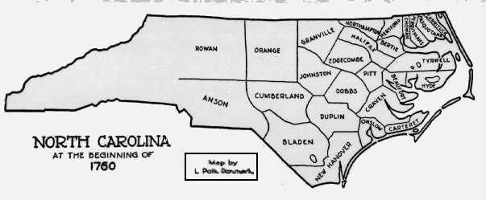
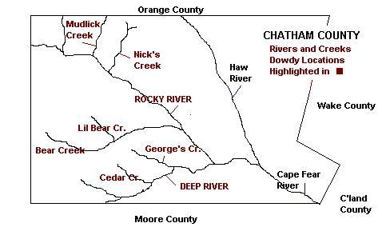
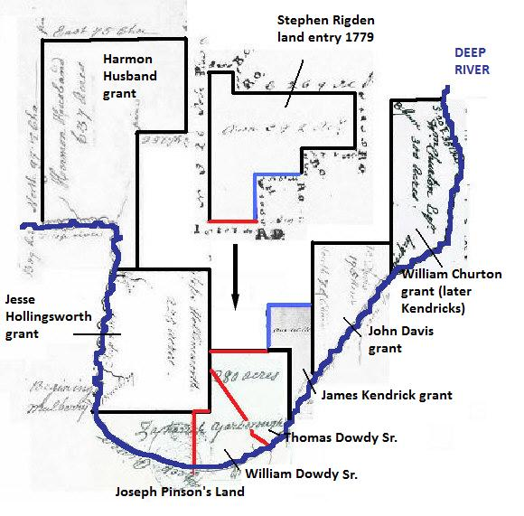
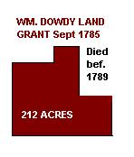
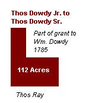
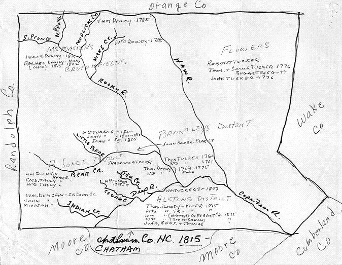
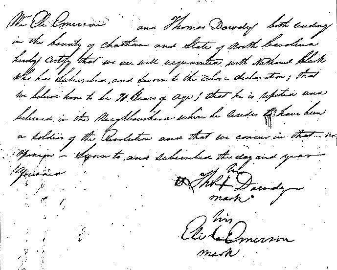
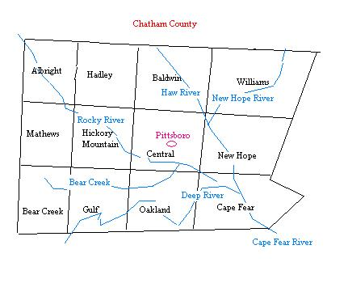

|
ORANGE/ CHATHAM COUNTY NORTH CAROLINA

1760
1762 Court Orange County. James Davis by James Kendrick 700
acres both sides of Deep River...joins Churton's and
Dowdy's lines.
1763 Feb 8 - Orange Co Deed. Thomas Dowdy buys 50 acres from
Joseph Pinson. wit John Cantril [need
details, not found in Orange Co Grantor index for Pinson/Penson,
nor under Dowdy in Grantee index]
1763 Nov Court. Orange County. Thomas Dowdy ordered to help
build a road from Bear Creek to Cumberland County line. Also
ordered: William Dowdy
1763 Orange County Court. William Thompson appointed overseer
of Thompson's road where it crossed Deep River with help of Thomas
and William Dowdy. [editor's note: Be aware that this
Thomas Dowdy is ?not the same person in Albemarle Parish Sussex
Virginia. That Thomas is still in Virginia at this time]
1768 Regulator petition to the governor of North Carolina
complaining about high recording fees for deed in Orange County
NC. Signed by Daniel Dowdy
1770
1770 CHATHAM COUNTY FORMED FROM ORANGE COUNTY

1771 Sussex Co VA Deed Book pg D
pg 423. Dated 2 March 1771 - William Parsons & Mary his wife
of the County of Orange and province of North Carolina of the
one part and Benjamin Clanton of the County and province aforesaid
. parcel of land situate Lying and being in the County of
Sussex and Colony of Virginia on the North side of the Swamp,
on Richard Ros's line, William Wooland's corner. 340 acres. <s>
William Parsons, <s> Mary Parsons. Wit: James Kendrick,
Thomas X Dowdy, John Clanton, Nicholas X Coplian, John
X Clanton, Ruben X Robertson, Note: the release of dower was
made 26 Dec 1771 in Guilford Co NC (not Orange) Proven in
Sussex Co VA 16 January 1772.
1772 Sussex Co VA Deed Book D pg 517 -18 January 172 -
Benjamin Clanton of Chatham Co NC
to William Richardson of Sussex Co VA 340ac on N side of Poplar
Swamp, land granted to Wm Craig by patent, devised by said Craig
unto his daughter Mary, now wife of William Parsons of NC and
by Wm Parsons and wife Mary conveyed unto the sd Benjamin Clanton
<s> Benjamin Clanton Wit: nathaniel Felts, Edward X Hale,
Thomas Mason, Littleberry Masson, David Mason
1772 Sept 23 - A List of Men on the Muster role of Capt. Joab
Brooks Company (source)
Thomas Dowdy
William Dowdy
1772 Sept 23 - A List of Men on the Muster Role of Capt. John
Birdsong's Company (source)
Daniel Dowdey
"In the province of North Carolina, all men from 16
to 60 years of age had to muster together on a regular basis,
for the protection of their county. They had to furnish their
own musket or rifle, their own powder horn and their own bayonet.
They elected their own officers and non-commissioned officers.
If a person did not wish to serve, he could pay someone else
to take his place.
These militia were responsible in keeping the peace against indians,
outlaw bands, pirates and any other force. As long as the fighting
took place in their own county, they received no pay. If they
were activated by the governor and had to leave their own county,
they then went on the state payroll for about ten dollars a month.
These men had regular drills and often times would be called
upon to serve a three month term of service. Even for a year
during the French and Indian War."
(editor's note: Based on the militia age requirements,
this would place the birth dates of Thomas, Wiliam and Daniel
Dowdy (all of Deep River) at between 1712 to 1756. Since
Thos and Wm. appear as adults in 1763, you could place their
approx births between 1712 and 1745-ish.)
1774, August 10- Chatham County Court.- a Jury, or any twelve
of them, appointed to review and turn the road called Husbands
from where it joins Quakers Road, to poplands ford on Bair Creek
& from thence to Iron Works (on Deep River) - list includes:
Thomas Dowdy, William Dowdy, and others. (Source: Chatham
Co., NC Court Minutes 1774-1779 by Poe Publishers - owned by
Steven A. Bridges) [Editor's Note: Harman Husband was a leader
of the Regulator movement in this area. He was part of a large
group of Quakers who moved to NC from the Philadelphia area]
1775 Aug Chatham County Court. Martin Kindrick overseer "of
the road" with William Dowdy, Thomas Dowdy.
1775 Nov Chatham County Court. Thomas Dowdy, William Dowdy
appointed to layout a road [where?]
1777 Aug Chatham County Court. William Dowdy appointed overseer
of road from Rigdons Ferry Road to Iron Works.
1778 Feb Chatham County Court. Thomas Dowdy, William Dowdy
appointed jurors
1778 Feb Chatham County Court. John Nall's district to be divided
by a road leading from Phillip Suttons mill to the Rocky River
near the Baptist meeting house thence to Capt Herndon's line
to Orange County line and including Thomas Dowdy's
1780
Adjacent land plats of the Dowdys
of Deep River, Chatham Co.

1761 Feb 20 Orange Co NC - Granville Grant -
280 acres of land surveyed for Zachariah Yarborough,
purchased from the State by Joseph Pinson at same time
(there is nothing found as yet showing sale of parts to Thomas
Dowdy Sr and William Dowdy Sr)
1780 Mar court. NC grant to James Kendrick...land joins
Thomas Dowdy's line and Deep River
1780 Nov court. Tax sale of land of Herman Husband (heirs residing
out of this state) sold to John Montgomery 80 acres joining
Jesse Hollingworth, Wm Dowdy and Joseph Pinson Land on North
side of Deep River.
1780 15 Nov . DB B pg 406. Sherriff disposes of land of Herman
Husbands highest bidder...land N side of Deep River ..joins
Jesse Hollingsworth, William Dowdy and Joseph Pinson [note:
when land sold in 1788 "joins land of William Dowdy..."]
1781 Revolutionary Claim Receipts (copies found in the DAR application
file: Thomas Dowdy)
April? 26 1781 No 406 State of North Carolina. Hillsborough District
Auditors Office . These may certify that Thomas Dowdey was
allowed the sum of six hundred [hole] <s> M[hole] Ramsey
1782 NC grant to Stephen Rigden on Throughfare Branch waters
of Deep River...joins James Kindrick's corner in Dowdays line,
Harmon Husbands and John Kindrick (note: this land sold to
Benjamin Watts in 1784 with same neighbors listed)
1782 April William Dowdy killed by Tories. Report of Col
David Fanning: "...I had set out for Chatham, when I learned
a wedding was to be that day. On my way I took one prisoner before
I came to the house. Ther being but five of us, we immediately
surrounded the house in full charge. I ordered them immediately
out of the house; three of my men went into the house and drove
them all out, one by one; I caused them all to stand in a row
to examine them, to see if I knew any of them that was bad men.
I found one, by the name of William Dowdy, concealed upstairs.
One of my men fired at him as he was running from one house to
the other. He received the ball in the shoulder. I then, having
my pistols in hands, discharged them both at his breast, with
which he fell, and that night expired. I then parolled the rest,
on the 25th."
1783 August 20 1783 Revolutionary Claim ReceiptsNo 3800. State
of North Carolina Hillsborough Audotors office. This is to
certify that Thomas Dowdey exhibits [hole] and was allo[hole]
nineteen pounds two shillings [hole] <s> Alex Mebane,
John Nichols
1783 Deed Book C, pg. 226-227 - Grant #606 Daniel Dowdy received
a grant for 250 acres, for the sum of 50 shillings per 100 acres,
on both sides of Pattersons’s creek, and on Kindricks corner.
9 Oct 1783
1784 August 23, 1784 (1786?) Revolutionary Claim ReceiptsNo 6853
State of North Carolina . Hillsborough Auditors Office. This
may certify that Thoma[hole]audey exhibits his claim and was
allowed fifty four [?] <s> John Nichols, Alex Mebane
1784 Chatham Court of Pleas. Thomas Dowdy appointed overseer
of road from Rocky River to Chrisopher Hornidays to work of road
from Barracks Ch--Hornidays: Thomas Dowdy, ____ Dowdy, George
Dowdy,...
1784 Chatham Court Nov. The road leading round Thomas Dowdy's
plantation as it is now cleared remain so. ...Elijah Teague
appt. overseer of road from Rockey River to Christopher Hornidays
in room of Thomas Dowdy
1784 Deed Book C, pg.274-275 Daniel Dowdy sold to Duncan McIver
of Chatham co, for 28 pounds, the land he received by Grant #606.
Land was on Patterson’s creek & Kindricks corner.
5 July 1784. Witnesses: John Thompson & John Montgomery.
Proven in court August term 1784, by oath of witness, John Thompson.
1784. 20 Apr 1784 DB C pg 455. Jas Kindrick to Wm Kindrick ...joins
Thomas Dowdy and the bank of Deep River.
1784 23 July DB C pg 481. John Kendrick to Daniel Dowdy
30L Land beginning at a spanish Oak on Dowdys Mountain
and turning E 180 poles to a post oak then S across Pattersons
Cr 125 poles at a hickory then S 100 poles to a post oak then
W 92 poles to a white oak then N 160 poles to abeach on Deep
River thence down the same to the first station containing
200 acres it being a tract of land granted to the said John
Kendrick by patent 9 Oct 1783. In presence of Jno Thompson,
James Kendrick. Recorded August Court 1784. New
1785 NC Revolutionary Army Accounts Vol VI Book 23
Hilsborough Treasurers Office Richardson Fugar, Sherriff Moore
County
William Dowdy 5.15.2
Hilsborough Treasurers Office April 1785. William Picket Sherriff
Randolph County 
William Dowdy 17.8.0
1785 Deed Book D, pg. 328 - Grant #738 William Dowdy received
Grant for 212 acres, for 50 shillings per 100 acres, on Nicks
Creek, John Hornaday’s line, and Wards corner. 23 Sep
1785
1785 Deed Book D, pg. 332 - Grant #158 Thomas Dowdy received
grant for 300 acres, for 50 shillings per 100 acres, on Mudlick
Creek and Rocky River. 23 Sep 1785
1785 Court. Returned list of insolvents: A. Simmons, John
Dowdy 1 poll, John Arnold
1787 Deed of James Poe to Christopher Horniday on head of South
fork of Cain Creek granted Poe 1787. Witness: John Doudy,
John Beray, Signed James and Mary Poe
1788 9 May 1788. DB F page 4. William Ward to Chriistopher Horniday
land lying on Mudlick Creek...wit: Thomas Dowdy Sr., Thomas
Dowdy Jr.
1788 Deed Book E, pg. 52-53 Thomas Dowdy sold to Thomas
Ray for 50 pounds, 90 acres on Mudlick Creek. Witnessess:
David Teague & Sarah Teague. 6 Sep 1788. Proven in Court
during May session 1790 by oath of David Teague. [note: this
was part of the land Thomas inherited from his brother William
Dowdy] 
1789 Chatham Co NC - Deed Bk. E, pg. 106-107 "This Indenture
made this 4th day of December, 1789, between Thomas Dowdy,
Junior of the County of Anson, NC, planter, of the one part and
Thomas Dowdy Senior of Chatham Co NC, Yoeman, of the other part.
Witnesseth that the said Thomas Dowdy JR for an in consideration
of the sum of 30 pounds to him in hand paid by the said Thomas
Dowdy SR, doth hereby acknowledge. All that tract or parcel of
land (112 acres) lying & being in the said County of Chatham,
on Nicks Creek, it being part of a larger tract or parcel (212
acres) granted to William Dowdy, deceased, by a grant bearing
date 23 day of September 1785, and registered in the Registers
office in Book D, pg. 328-319, recourse being thereunto will
more fully appear. With the said William Dowdy, dying without
issue, his brother Thomas Dowdy JR, by heirship became solely
entitled to the said land, etc, etc. Witnesses were Berkley
Dowdy and Josiah Rogers. Proved during November session 1790
by Josiah Rogers."
1789 Chatham Co Marriage Purchases [note: from 1785-1791 county
clerks forwarded all lists of revenues to the state Treasurers
Office] Benjamin Dowdy. Box #29 Treas & Comptrollers Papers,
county Settlements.
1790
1790 Chatham County NC Census
| Head of HH............m+16...m-16...all f |
Comments |
| John Dowdey..........1.....0.....3 |
b. 1762 Alb Par. s/o Thos of Rocky River. died
1792 |
| William Dowdey......1.....0.....0 |
Unknown |
| Ru'd Dowdey..........1.....0.....0 |
son of William Dowdy Sr of Deep River |
| Jesse Dowdey.........1.....0.....0 |
Unknown. See 1792 abstract. Living Deep River
area |
| Benjamin Dowdey...1.....0.....2 |
Unknown. See 1792 abstract. Living Deep River
area |
| Joseph Dowdey......2.....6.....2 |
Unknown. Large # of sons. Where did he go? |
| Daniel Dowdey.......2.....3.....4 |
Lives 1800 Moore NC. Moved to Georgia |
| William Dowdey.....3.....5.....4 |
William Dowdy Sr of Deep River. died 1826 |
| Thomas Dowdey....2.....0.....3 |
Thomas Dowdy of Rocky River w/ Bartley in HH |
| Thomas Dowdy Sr of Deep River |
missing from census |
1791 Deed Book E, pg. 196-197 Daniel Dowdy sold to Daniel
McIntosh of Moore Co, NC, for 50 pounds, 200 acres on south side
of Deep River, beginning on Dowdy’s Mountain. Land was originally
granted to John Kendrick on 9 Oct 1783, who sold it to Daniel
Dowdy on 23 Jul 1784. Witnesse: Joseph Thompson & Wm.
McLennon. Deed dated 25 Jan 1791, Proven in court during February
session 1791, by oath of Joseph Thompson.
1791 Feb 12 1791. DB E pg 193. William Duncan to Jethro Vincent
and Jas Clark...wit: William Dowdy, John Montgomery.
1791 Jan 9 1791. DB E pg 194. John Montgomery to John McFarland
...runing north along Duncan McIver's line and Daniel Dowdy's
lines.
1791 March 1791. DB E pg 306. William Kendrick to Chiles McGee...lying
on the North side of Deep River...another tract on Thomas Dowdy
corner on bank of Deep River
1792 Loose Papers - NC - Chatham Co (FHC film #1065099) Administrators
Bond - John Dowdy, dec’d Hannah Terry & James Terry
bonded to be Administrators for the estate of John Dowdy Estate.
Bondsman was Christopher Hornaday. May 1792
Genforum Posting: John Dowdy died intestate in Chatham
County and his estate was administrated by his widow Hannah (nee
Whitehead) and her second husband James Terry on 14 May 1792.
Hannah's will, dated 11 Apr 1835, mentions her daughter Sarah,
son William Dowdy and grandson Hiram Dowdy. I believe
Sarah was John Dowdy's child, since she is not mentioned
in the will of Hannah's husband James Terry, who predeceased
her, and dated 22 Oct 1922. James and Hannah had a daughter Catherone,
said to have married James Dowdy Sr. I would like very
much to know the relationship of the above to other Dowdys
of Chatham County. -George Whitehead
1792 Loose Papers - NC - Chatham Co (FHC film #1065099) Inventory
of John Dowdy’s estate filed in court by Administrators
John & Hannah Terry. Consisted only of 1 mare & colt,
2 cows, 1 sow, misc.dishes, pans & farming tools, and one
saddle. May Term of court – 1792
1792 25 Sept 1792. DB G pg 120. Malcom McCollum to John McCollum
...south side of Deep R. below the mouth of Pocket Cr. beginning
on bank of Rive (formerly John Thompsons corner now Joseph Lea's)
then running east to Daniel Dowdys line.
1792 Aug – Court of Common Pleas - Ordered that Strangeman
Modglin overseer of the road called the Gulph road from Rockey
River to the Min road that crosses Deep River at Andersons ferry
& the following hands work under him to wit: Lewis Johnson,
William Pascal, John Daugherty, Joel Patterson & Jesse
Dowdy ~ And that Chiles McGee be appointed overseer
of the Gulph road from the road Crossing Deep River at Anderson
ferry to Deep River & that the following hands work under
him to wit: Thomas Galloway, Murdock McKenzie, Lewis Freeman,
Benjamin Dowdy, Richard Dowdy
1793 13 Nov 1793. DB G pg 146 William Gober to Thomas Galloway
...land on Cedar Creek...test: Thomas Dowdy
1793 17 Aug 1793. DB G pg 380. Thomas and Charity Ray to Joseph
Bridges ...land on Mudlick Creek 90 acres being part of a
tract granted to William Dowdy, dec'd.
1794 Deed Bk H p57. NC land grant 1174 150 acres to Thomas
Dowdy on waters of Nicks Creek
1796 Deed Book J, pg. 126 Thomas Dowdy gave “for love
and affection” to daughter Anne Bray, wife of Edward Bray
Jr, 100 acres on Mudlick Creek, part of his grant dated 23 Sep
1785. Deed dated 6 Oct 1796. Witnesses: Bartley Dowdy
& Lucy Dowdy. Proven in during August 1797 Session of
court
1796 Deed Book L, pg. 300 Thomas Dowdy gave, “for Love
and Affection” to his son Barkley Dowdy, two tracts of land
on Nicks Creek, one containing 44 acres being a part of Thomas’s
Grant dated 23 Sep 1785, the second containing 56 acres being
part of his Grant dated 7 Jul 1794. Witnesses: John Johnson
& Anthony Chamness. Deed dated 8 Nov 1796. Proven in court
during February Session 1801
Nov., 1796 Pg. 220 - SAMUEL COX , to whom AUGUSTINE TYSER was
bound is permitted by the court, to give up the indenture of
the said AUGUSTINE, who is rebound to GABRIEL TYSER, to learn
the trade of a Taylor. [note: Lucy Dowdy m. Augustine
Tyser] - ORPHAN'S INDENTURES & GUARDIANSHIP RECORDS IN
COURT MINUTES Taken from Chatham Co. Court of Pleas & Quarter
Sessions- 1774-1800 See http://rootsweb.com/~ncchatha/orphan.htm
for a terrific description of the "orphan " rules.
Nov., 1796 Pg. 231 - CHANEY Dowdy, & THOMAS Dowdy
, the girl about sixteen years old and the boy about fourteen
years old be bound to THOMAS Dowdy, Sen'r. untill the(y)
arrive at lawfull age. - ORPHAN'S INDENTURES & GUARDIANSHIP
RECORDS IN COURT MINUTES Taken from Chatham Co. Court of Pleas
& Quarter Sessions- 1774-1800 See http://rootsweb.com/~ncchatha/orphan.htm
for a terrific description of the "orphan " rules.
1797 Feb Court. Road to Anderson's Ferrry on Deep River iron
works, Chiles McGee overseer: John Dowdy, Archibald
McIntire, James Dowdy, Armstead Dowdy, Balaam Dowdy, George
Dowdy, Thomas Dowdy, William Dowdy and Benjamin Dowdy
1798 Fort Wayne, IN, Public Library - Genealogy Dept, Film Reel
#33, pg. 97 .13 May 1798 Thomas Dowdy, Senior, gave Power
of Attorney to his son William Dowdy, “to sue for, recover
& receive all sums of money and dower rights of and from
the Estate of Robert Parsons, deceased, whose daughter, Elizabeth,
I married.” . Witnesses: M. McKenzie & J. McBride.
Proven at May term of court 1798
1799 Nov 25. Deed Bk L pg 19. James Bullard to Thomas Dowdy
Jr. tract on west side of George's Creek east to late Gilbert
Paterson's ...229 acres
1800
1800 Chatham County NC Census
| Head of HH |
10..16..26..45..+45 |
10..16..26..45..+45 |
Comments |
| John Dowdy |
.2....0....1....0.....0 |
.1....1....0....1.....0 |
John Dowdy of Harts Creek |
| William Dowdy |
.0....3....0....0.....1 |
.0....0....1....0.....1 |
William Dowdy Sr of Deep River |
| William Dowdy |
.0....2....0....1.....0 |
.0....0....0....2.....0 |
son of Thomas Dowdy Sr of Deep River |
| Benjamin Dowdy |
.3....0....0....1.....1 |
.1....1....1....1.....0 |
Unknown |
| George Dowdy |
.0....0....1....0.....0 |
.0....0....2....0.....0 |
son of William Dowdy Sr of Deep River |
| Thomas Dowdy Sr |
.0....0....2....2.....1 |
.0....0....1....0.....1 |
Thomas Dowdy Sr of Deep River |
| Thomas Dowdy |
.0....0....0....0.....1 |
.1....0....1....1.....1 |
Thomas Dowdy of Rocky River |
| Bartley Dowdy |
.3....1....1....1.....0 |
.1....0....0....1.....0 |
b. 1770 Alb Par. son of Thomas Dowdy of Rocky
River |
*note: Moore Co. NC 1800 census (next to Chatham) includes
Daniel Dowdy and James Dowdy.
1801 Deed Book L, pg. 235-236 Benjamin Dowdy bought from
Thomas Galloway, for 200 pounds, 200 acres on Cedar Creek,
Galloway’s line, and McIntyre’s line. Deed dated 11
Aug 1801. Proven in court by grantor thomas Galloway, August
1801 session.
1801 Deed Book L, pg. 356 - Grant #1603 Thomas Dowdy, Grant
for 25 acres, at 50 shillings per 100 acres, on Georges
Creek, Billington Taylor’s corner, Harris’s line,
and Dowdy’s present line. 4 Nov 1801
1802 Dec 9. Deed Bk X NC to John Dowdy 43 acres on waters
of Hart's Creek Reiver's Corner, to the road thence along Scarbrough's
line [note: this land grant was registered in Bk X which exists
in the 1820s]
1802 Deed Book N, pg. 3 Thomas Dowdy, gave “for natural
love & affection of my beloved Granddaughter, Rachel Dowdy,
daughter of Lucy Dowdy”100 acres on Nicks Creek, lines
of John Johnson,and Barkley Dowdy, and one feather bed
& furniture. Deed dated 14 Sep 1802. Witnessed by Joseph
Bridges and Thomas Hardy. Proven November session 1802 by Joseph
Bridges
1802 Deed Book N, pg. 4 Thomas Dowdy gave “for natural
love and affection” to daughter Sarah Norman, wife of Wm.
Norman, 100 acres on Mudlick Creek. 27 August 1802, witnessed
by Edward M. Dorsey Jr & Robert Harman. Proven November session
1802 by Edward Dorsey
Loose Papers - NC - Chatham Co (FHC film #1065099) Estate
papers of Thomas Dowdy, Deceased Bartley Dowdy & Thomas Hadley
were named Administrators of the Estate of Thomas Dowdy, deceased.
Bondsman for them were Edward Bray and Robert Stinson.
1802 Loose Papers - NC - Chatham Co (FHC film #1065099) Inventory
list and amount of sale of the estate of Thomas Dowdy, deceased,
submitted to the court, and recorded on 2 Dec 1802, in Book A.,
pg. 92
1803 Loose Papers - NC - Chatham Co (FHC film #1065099) (Thomas
Dowdy Sr may have previously been Guardian of granddaughter,
Rachel Dowdy, as this small scrap of paper was found in
his estate file) “Sundries due to Edward Bray, Guardian
of Rachel Dowdy, notes of James Overman, John Johnson, Wm.
Norman, & Jeremiah Johnson, totaling 13.18.1. 2 Dec 1803.”
1804 Loose Papers - NC - Chatham Co (FHC film #1065099) Ordered
that Joseph Bridges, Andrew Headen and Thomas Rives, Esq’s,
be and they are hereby appointed a Committee to settle with the
Administrators of Thomas Dowdy, dec’d and report
to next court. November session 1804
1804 Nov. 30, David Record to John Dunkin, £200, 220 acres
south side of Bear Creek, Wm. Dunkins line & corner. Wit.
Samuel Eloitt, William Dowdy, Johua (x) Tilmon.
(FHL film 259,410) O-26:
1804 Deed Book O, pg. 86-87 Barkley Dowdy sold to Joseph Bridges
for $125, the two tracts of land on Nicks Creek that was given
to him in 1802, by his father, Thomas Dowdy. Witnesses: Thomas
Caskett & George Gee. 27 Dec 1804. Proven at February 1806
session
1804 Nov Deed Book M. Robert Spiers to William Dowdy,
tract on north fork of Georges Creek, the water of Deep River,
with Ballard's line down the creek to Roger's line. [acres?]
1805 Jan Court Thos Rives and Jos Bridges certify to true
accounting of Thos Hadley and Bartley Dowdy, adms. of Thos Dowdy
deceased.
1805 Loose Papers - NC - Chatham Co (FHC film #1065099) “Account
Current” of the estate of Thomas Dowdy, submitted to
the court, by Commissioners Thomas Rivers, J.A.Bridges &
Andrew Headen. Amount of the personal Estate of Thomas Dowdy,
deceased = 151.6.6-1/2. Less vouchers against estate in the
amount of 43.2.2-1/2. Balance = 108.4.4, on 19 Jan. 1805. Recorded
Feb. term 1805
1805 CULBERSON, ANDREW - Inventory taken "of items not
mentioned in the will" 16th Feb. (no year given) Note
on Joshua Adcock, Daniel Hackney, John Quakenbush, Henry Holliday,
Jonathan Lindley, Joseph Vestal, Samuel Culberson, & Joseph
Bridges, An additional inventory was taken Nov., 1, 1804 with
sales of items and purchasers Peter Stoner, Jacob Hinshaw,
Samuel Culberson, John Fox, Thomas Ward, John Whitehead, Henry
Bray, Jr., John Horniday, Josiah Culberson, Robert? Whinnery,
Silas Vestal, Robert Howel, Jr., Thomas Cashat, Samuel Stewart,
Thomas Watson, Benjamin Bayley, William Campbell, John C. Walden,
William Jones, Barney Fox, George Curl, Joseph Bridges, Stephen
Ward, Andrew Hunter, William Barnett, Ann Culberson, Alexander
Wilky, John Evans, Levy Johnston, William Lewis, Joseph Hackett,
Jonathan Johnson, Lazarus Hinson, Nathan Stedman, Jeremiah Johnson,
Stephanis Chamess, Edward Bray, Nicholas Fox, Peter Quakenbush,
George Gee, Eli Johnson, Joseph Vestal, Michael Welch, John Gump?,
Nathaniel York, Robert Hinson, Isaac Johnson, Thomas Watson,
Jesse Johnson, Joseph Terry, Levy Branson, Robert Carter, William
Curl, William Holliday, Edmond McSwine, Walter Welch, Zebulon
Welch, Bartley Dowdy, Jeremiah Hadley, John Bland?,
John Carter?, David Record, John Culberson, Jeremiah Hadley,
Philip Siler, Samuel Brooks, John Webster, William Hobson, John
Craton, Robert Stinson, Adam Mosure, John Newton, George Dismux,
William Marsh, Henry Holliday, Zebulon Holliday, Zebulon Johnson
William Allen, John C. Waldon, Jacob Newton, Jonnathan Edwards,
Rebecah Culberson, Abraham Lane, Isom Man, Sarah Howel, Sr.,
Hech. Hart, Thomas Vestal, Joseph Doan, William Hopkins, Margaret
Thompson, Jesse Green, Ann Lindley, Benjamin Hinshaw, Job Ward,
Aaron Lindley, Amos Ratlif, Josiah Siler. Final accounting by
Andrew Headen, John Siler and Joseph Bridges made Feb. Session
1805.
1805 Fort Wayne IN, Public Library, Genealogy Dept, Film - Reel
#43 Will
of Thomas Dowdy ( II )Will names daughters Nelly Goodman,
Lucy Dowdy, Sarah Dowdy, and sons John, William,
Thomas, James, Armstead, and Balaam to have one dollar. son Joab
on dollar, one mare, bed & furniture, son Benjamin one horse,
bed & furniture, and daughter Rebecca Dowdy one mare,
bed & furniture. Wife Rebecca Dowdy to have rest,
consisting of land, tenements and furnitureuntil her death. After
her death to be divided among Thomas Dowdy, James, Dowdy,
Armstead Dowdy, Balaam Dowdy, Joab Dowdy,
Benjamin Dowdy and Rebecca Dowdy. Dated 27 January
1805. Witnesses: John McIntosh & Charles McGee. Proven in
court February session 1815 by John McIntosh
1806 Feb Court Archibald McIntire is appointed overseer of the
road from Brantly's Ferry on Deep River to Bear Creek in the
room of Jesse Poe and is to have the following hands to work
under him, to wit: His own hands, Col. Taylor's hands on Deep
River, Johnston Parish, John Godfrey, Bennett Fields, James Bennett,
Elijah Hinson, Henry Moody, Sen., William Dowdy, Balaam
Dowdy, Thomas Beal's hands, Henry Poplin, George Poplin,
Barney Stewart and Jesse Poe's hands.
1806 Deed Book O, pg. 299 Thomas Dowdy, George Dowdy, Barkley
Dowdy, Edward Bray, Augustin Tyser & William Dowdy, rightful
heirs of Thomas Dowdy, deceased, in consequence of Thomas Dowdy
dying intestate, sold to William Norman for 52 pounds, 10
shillings, 182 acres on Rockey River, Normans present
corner, Brays corner, Bridges line, and Rachel Dowdys line.
Witnesses Thomas Hadley, Joshua Hadley, Wm. Lewis, Hannah Hobson.
Dated the 1 Mar 1806. Proven February session 1807 by oath of
Thomas Hadley & Hannah Hobson
1806 May 2. Marriage of Baalam Dowdy to Keziah Riddle
1807 Feb Court. James Bennett is appointed overseer of the
road, the ensuing year, in the room of Archibald McIntire
from Brantly's Ferry on Deep River to Bear Creek and is to
have the following hands to work under him, to wit: Archibald
McIntire's hands, Col. Taylor's hands on Deep River, Johnston
Parish, John Godfrey, Bennett Fields, Elijah Hinson, Henry Hodgkin,
William Dowdy, Balaam Dowdy, Thomas Beal's
hands, Henry Poplin, George Poplin, Barney Stewart and Jesse
Poe's hands
1807 August 7 - Chatham Co Land Entries - Surveyed for Thomas
Dowdy 84 acres of land on Deep River by virtue of a warrant
No 54 beginning at a black jack, James Taylor's corner, thence
running East 166 poles with Taylors line to a red oak thence
South 18 poles to a stake thence West 166 poles to a stake thence
to the beginning station entered 3rd September 1807. R Brooks
Ds, Thos ?Sniper Cs, Wm Abbot S, Benjamin Dowdy CC (chain
carrier)
1808 Marriage bond between Nathan Hobson & Rebecca Freeman,
19 Mar 1808, Chatham co,NC; bondsman William Dowdy,
witness Thomas Ragland; Bond Nbr 20104
1808 May Court. William Dowdy (Hatter) overseer of
road [see Feb 1806 above] with Baalam Dowdy...et al.
1808 Loose Papers - NC - Chatham Co (FHC film #1065099) John
Teague appointed Guardian of Rachel Dowdy. Bondsmen were
James Hunter and Wm. Marsh. 10 Aug 1808
1809 Mar 23. Raleigh Regster newspaper: A few weeks ago William
Gregory of Moore County aged 85 was married to Miss Sally Dowdy
of Chatham County aged 75. (note: this means she was born
about 1734 and was a spinster)
1809 Deed Book P, pg. 307 - Grant #1496 Thomas Dowdy
granted 84 acres at 50 shillings per 100 acres, on Deep River,
and Taylors corner. 3 Aug 1809
1810
1810 Chatham County NC Census
| Head of HH |
10..16..26..45..+45 |
10..16..26..45..+45 |
Comments |
| Joab Dowdy |
.0....0....0....1.....0 |
.2....0....1....0.....0 |
son of Thomas Dowdy Sr of Deep River |
| Joseph Dowdy |
.1....0....1....0.....0 |
.1....0....2....0.....0 |
unknown |
| Thomas Dowdy Sr |
.0....0....1....0.....1 |
.0....0....1....0.....1 |
Thomas Dowdy Sr of Deep River |
| William Dowdy Sr |
.0....0....1....0.....1 |
.0....0....0....1.....0 |
William Dowdy Sr of Deep River |
| Baalam Dowdy |
.1....0....0....1.....0 |
.0....0....1....0.....0 |
son of Thomas Dowdy Sr of Deep River |
| Thomas Dowdy Jr |
6....0....0....1.....0 |
.0....0....0....1.....0 |
son of Thomas Dowdy Sr of Deep River |
| William Dowdy (hatter) |
.0....0....0....1.....0 |
.0....0....0....0.....1 |
son of Thomas Dowdy Sr of Deep River |
| Bartley Dowdy |
.1....2....1....1.....0 |
.0....1....0....1.....0 |
son of Thomas Dowdy of Rocky River |
| John Dowdy |
.1....1....0....0.....1 |
.2....1....1....1.....0 |
John Dowdy of Harts Creek |
| William Dowdy |
.0....0....1....0.....1 |
.0....0....1....0.....1 |
unknown |
1810 May Court. Thomas Dowdy Jr. overseer of Gulf Road
from the ford leading to Brantley's Ferry to Field's xroads with
Baalam Dowdy, Wm Dowdy, Jr....et al.
1810 (August 1811 Court). John Stinson collector of taxes returned
the following insolvents for the year 1810. ....Balaam Dowdy
1 poll... (is he already in GA?)
1811 8 Nov - Deed Book S, pg. 136 & 137 $100 for 100 acres,
from John Evans to John Dowdy, on the waters of Rocky River,
on Elijah Hunter’s corner, Witnessed by William Guthrie
& Claiborne Guthrie, recorded Nov. session 1811
1812 25 May - Deed Book S, pg. 340 & 341 $300 for 202
acres, from William Norman and Sarah Norman, his wife, to William
Dowdy, land on waters of Rocky River, Thomas Hadleys corner,
with Hadleys & Joseph Bridges line, on John Johnson’s
line, at Rachel Dowdy’s corner, Rachel’s other corner,
John Ravensbys corner, with said Ravensby’s line. Witnesses:
Thomas Hadley & John Ravensby. Registered Nov. session 1812
1812 ORANGE CO, NC - Deed Bk. 14, pg. 481-482 Rebecca Dowdy,
wife of William Dowdy, of Chatham co NC, from her Grandfather,
Wm. McPherson, “for love and affection” 93 acres in
Orange co NC on Cane Creek, McPherson’s corner, and
County Line. Witnesses: James Terry & Enoch McPherson, dated
17 June 1812. Proven in Orange co court May 1813 session, by
James Terry.
1812 Chatham co Deeds - Book T, pg. 64 ...between William Norman
of Orange County and State of North Carolina, Sarah and William
Dowdy of Chesterfield District and State of South Carolina, of
the one part, and John Ravensby of the County of Chatham... do
grant, bargain and sell and confirm unto the said John Ravensby,
a certain tract or parcel of land on the waters of Mudlick Creek...
John Ravensby's own corner, Joseph Bridges corner, west on
William Dowdy's line, on Thomas Hadlys line. 78 Acres. Wit:
William Dowdy,Bartly Dowdy, John Terry.Chatham County, Proven
August Session 1813 by the oaths of William Dowdy and
John Terry
1800 Chesterfield District SC Census [on NC border]
George Dowdy 22010-31010 [also in 1790 census: 11100] b.1755-1774
Thomas Dowdy 41010-11010 [also in 1790 census: 10300] b.
1755-1774
note: George Dowdy of Albemarle Parish VA was born 1764.
There are 9 boys unaccounted for between the two families here.
1810 Census
George Dowdy 00001-22101 b. bef 1765
Thomas Dowdy 11301-21110 b. bef 1765 [is this Thomas of
Albemarle Parish VA?]
1820 Census [none in 1830 census]
George Dowdy 000010-020010 b. 1775-1794
William Dowdy 100010-300100 b. 1775-1794
1812 War Service of Benjamin Dowdy Sr. 5th Regiment
5th Company detached from Chatham Regiment Captain Carney Cotton
1813 Feb James Dowdy m. Catherine Terry (b.1793) by Thos
Hadley J.P. in Chatham NC [source: pension application of
Catherine Dowdy in Lauderdale County AL for War of 1812
service of James Dowdy who enlisted in the SC militia.
She stated they were married in Chatham NC in 1813 and that James
Dowdy died in Lauderdale AL in Aug 1872.]
1830 Lauderdale AL census
David Doudey 20001 - 10001 born 1800-1810(Bureau Land Mgt
grants: 80 acres in 1839)
James Doudey 2000001 - 032101 born 1780-1790. Acutal birth
1789 (Bureau Land Mgt grants: 40 acres in 1835, 40 acres in 1838)
Thomas Doudie
(Note: Bureau Land Mgt grant to George Dowdy 40 acres in
1835)
1840 Lauderdale AL census
Thomas Dowdy 10001 - 11001 born 1810-1820 [not the Thomas
who fought in 1812 War?]
1850 Lauderdale AL census
James Dowdy age 61 in SC, wife Catherine age 58, ch: Catherine
28 b AL, Lavina 16 , Jerrymyah 22, John 19 , Martha 14. Next
door was James T. Dowdy age 23.
David Dowdy age 51 b NC, wife Mary age 45 SC ch: Jas Madison,
Sarah, Wm, David, Mary (Note: David Dowdy m. Mary Reeves in Lauderdale
in 1825)
1814 - Meeting of the Sandy Creek Baptist Association at Cedar
Creek Meeting House (Anson Co) representing George’s Creek
Church of Chatham Co: Thomas Dowdy, Thomas Waddill, James Burns
1815 Will of Thomas Dowdy proven in court February session
1815 by John McIntosh [see abstract of Will dated 1805 listed
above]

1815 Tax List (source: Chatham Genweb)
“The men who are listed only, as a 'white poll' are probably
young men, without any land and "possibly", still living
at home or. It is my understanding, according to N.C. law, men
had to be counted as a 'poll' when they became 21 years of age
and exempted at age 50, at this period of time. However, IF there
IS acreage and there is NO poll then, you may be sure that the
man is exempted for being over age or physically impaired.”
According to the chapter on "Tax and Fiscal Records"
by Raymond A. Winslow, Jr., in North Carolina Research (Raleigh:
NC Genealogical Society, 1996, p. 231-239), between 1801 and
1817, the free poll included whites aged 21 to 50, and the slaves
were aged 12 to 50.
| District |
WP |
BP |
Acres |
Location |
Adjacent |
Value |
| Capt. Brantley's Dist. |
' |
' |
' |
' |
' |
' |
| Dowdy John |
' |
' |
143 |
' |
His residence |
$200 |
| Capt Alston's District |
' |
' |
' |
' |
' |
' |
| Dowdy, Joab for Thomas Dowdy's heirs |
' |
' |
134 |
Deep River |
' |
$168 |
| Dowdy, William Sr. |
' |
' |
100 |
Deep River |
' |
$400 |
| Dowdy, William (hatter) |
1 |
' |
250 |
Georges Creek |
T. Neal |
$500 |
| Dowdy, Joab |
1 |
' |
' |
' |
' |
' |
| Dowdy, Wm. son of Sarah |
1 |
' |
' |
' |
' |
' |
| Dowdy, Benjamin |
1 |
' |
' |
' |
' |
' |
| Dowdy, Thomas |
1 |
' |
253 |
Georges Creek |
' |
$400 |
| McMaster's District |
' |
' |
' |
' |
' |
' |
| Dowdy, James |
1 |
' |
' |
' |
' |
' |
| Dowdy, William |
1 |
' |
202 |
Mudlick Creek |
' |
$250 |
| Crutchfields's District |
' |
' |
' |
' |
' |
' |
| Teague, John for Rachel Dowdy |
' |
' |
100 |
Nicks Creek |
' |
$100 |
1815 November Court. Anderson Riddle overseer of road from
Pittsboro to Wilcox Mill from fork of Brantley's Road to the
xroad with help of Wm Dowdy, Jr, Thomas Dowdy...et al
1818 Loose Papers - NC - Chatham Co (FHC film #1065099) Inventory
of the Estate of Bartley Dowdy, dec’d, submitted by Thomas
Hadley, Administrator, August session 1818
1818 Loose Papers - NC - Chatham Co (FHC film #1065099) Report
of Sale of the Estate of Bartley Dowdy, deceased. Amount
$108.73, plus $5.00 due from Jesse Stout, Total $123.73. August
Session 1818
1819 Loose Papers - NC - Chatham Co (FHC film #1065099) Account
of the estate of Barkley Dowdy submitted by Thomas Hadley, Administrator,
amount of sale Jun 5, 1818 - $108.43, Frances Dowdy, widow
$2.00, Jesse Stout $5.00, whole amount = $115.43. dated 6 Aug
1819
1819 Loose Papers - NC - Chatham Co (FHC film #1065099) Settlement
of Estate of Bartley Dowdy submitted to court. Amounts paid
out of Estate since 5 June 1818 = $115.43. 6 Aug 1819
1818 Loose Papers - NC - Chatham Co (FHC film #1065099) One
years provision set off and allotted to Frances Dowdy, widow
of Bartley Dowdy, dec’d, by commissioners Joseph Bridges,
John Johnson, John Hadley & Jesse Johnson. 18 Jul 1818
1818 Loose Papers - NC - Chatham Co (FHC film #1065099) Administrators
Bond issued to Thomas Dowdy ( III) for the estate of Thomas Dowdy
( II) deceased. Bondsmen signing with him were Thomas Waddell
& Andrew McBryde. 11 August 1818 (Note: This is for the
Estate of Thomas II, whose will was dated in 1805, named no Executor,
and left all to wife Rebecca during her lifetime. It is probable
that an Administrator was not named prior to this date, as nothing
could be sold or divided until Rebecca’s death, making it
also probable that Rebecca is now deceased.)
1818 The Raleigh Register of 20 February 1818: "the
body of Barlett Dowdy, of Chatham county, was found in the Snow
on the 6th instant, after lying six days. It is supposed he was
in liquor, and [upon his] lying down, the Snow fell and covered
him, and he rose no more!"
1820
1820 Chatham County NC Census
| Head of HH |
10..16..18..26..45..+45 |
10..16..26..45..+45 |
Comments |
| Francis Doudy |
.0....0....1....1....0.....0 |
.0....0....0....0.....1 |
Widow of Bartley Dowdy (4 sons gone) |
| James Dowdy |
.0....0....0....0....1.....0 |
.4....0....0....1.....0 |
in Lauderdale AL in 1830 |
| William Doudy |
.1....0....0....1....0.....0 |
.3....1....1....0.....0 |
b. 1794-1804 unknown |
| Thomas Dowdy |
.3....3....2....1....0.....0 |
.0....1....0....1.....0 |
widow w/ teenagers and young child.? |
| William Dowdy |
.1....0....0....0....1.....0 |
.1....0....0....1.....0 |
William Dowdy of (m. McPherson) |
| John Dowdy |
.0....0....0....2....0.....1 |
.0....2....2....0.....1 |
John Dowdy of Harts Creek |
| Thomas Dowdy |
.1....2....2....4....0.....1 |
.2....0....0....1.....0 |
Thomas Dowdy Jr. of Georges Creek |
| Thomas Dowdy |
.0...0.....1....1....0.....0 |
.0....0....0....0.....1 |
|
1820 Feb 20. Deed Bk X p 211. William Dowdy to Thomas Dowdy
two tracts in fork of George's Creek, the waters of Deep River,
with Ballard's line, proved 1821 by oath of James Dowdy
[note deed plotting software established that the 2 tracts sold
were 50 acres and 200 acres]
1820 “Friday before the 4th Lord’s day in October”
- Meeting of the Sandy Creek Baptist Association at Timber
Ridge Meeting House (Randolph Co) representing George’s
Creek Church of Chatham Co: Thomas Dowdy, John May, Thomas Beal
1820 Deed Book X, pg. 200 - Grant #1643 John Dowdy Grant for
43 acres at $10. per 100 acres, on Hart’s Creek, Dowdy’s
present corner, Bennett’s line & Rive’s line.
9 Dec 1820 [see 1802 deed abstract]
1820 Deed Book X, pg. 271 Power of Attorney given to Thomas
Dowdy (III) by his brothers James Dowdy, Aarmstead Dowdy Balaam
Dowdy & Benjamin Dowdy of Franklin co. Georgia, to sell their
land they inherited from their father, Thomas Dowdy (II). Witnesses
Samuel Mosby Sr, James Dowdy & Benjamin Dowdy. 24 Nov
1820. Proven during May Session 1821 by oath of Benjamin Dowdy.
(Note: Benjamin Dowdy is named as one giving the Power of Attorney,
but only James, Armstead & Balaam signed it. Benjamin signed
as a witness only!)
Franklin County GA Tax Lists
1805-1806 James and Armsted listed without additional info
1808 James Dowdy 155 ac
1810 James Dowdy 155 ac and for Armsted Dowdy 202 1/2 ac
1813 James and Armsted (listed separately), Belum Defaulted
(doesn't appear again-see Hall Co GA info)
1818 James and Armsted (listed separately), Benjamin Defaulted
(in lists through 1820)
1822 Armsted only (in lists through 1833) Shows up in next
door Talbot Co afterward?
Note: James and Sarah Dowdy sold land to Wm Wyly in 1822
Franklin . Is this the same James Dowdy whose wife Sarah was
involved in her father Stephen Poe's estate in 1843 Benton AL.
Stephen Poe lived in Franklin GA at one time. A James Dowdy exists
(b1770-80) in next door Randolph Co AL 1840 census. Same Person??
1821 Deed Book N, pg. 331-332 Thomas Dowdy ( III ), for himself,
and as Attorney for Armstead Dowdy, James Dowdy & Balaam
Dowdy of the State of Georgia, and John Clark and Rebecca Clark,
his wife, Joab Dowdy, and Benjamin Dowdy, all devisees of Thomas
Dowdy deceased, sold to Col. James Taylor, for $500, two tracts
of land land left to them in will of their father, Thomas Dowdy
(II). One tract of 50 acres on North side of Deep River, Taylors
present line, & William Dowdy’s corner. The other tract
of 84 acres also on Taylors other line. Witnessed by Thomas
Ragland & James Kirby, on 15 Aug 1821.
1821 Oct 26 - Meeting of the Sandy Creek Baptist Association
at Sandy Field Meeting House (Orange Co) representing George’s
Creek Church: Thomas Dowdy, J. May, J. Petty
1821 DECEMBER This indenture made this 22nd day of December in
the year of our lord eighteen hundred and twenty one between
Thomas Beal, Senr of the County of Chatham and State of North
Carolina of the one part and Britian Beal of the said county
and state, son of the said Thomas Beal, Senr of the other part
all that tract or parcel of land whereon I now live lying on
both sides of Bear Creek including three hundred acres adjoining
to the south which I purchased of Richard Mauldin. The whole
of said two tracts bounded as follows: On the north by Henry
Fields and James McDaniel, on the east by James McDaniel and
William Dowdy, on the south by the Meeting House ( Meroney's
? ) tract and Merrill Hart, on the west by Henry Fields containing
by estimation five hundred and twenty acres be the same more
or less.
1822 Court of Pleas and Quarter Sessions - Monday May 13th 1822-
Joab Dowdy app’d overseer of the road from Pittsborough
to the Gulph from Brantley’s Cross Roads to Deep River,
at the Gulph, in the place of Thomas Gallaway, following hands
to work under him. Col. Taylor’s hands on Deep River.
1822 Court of Pleas and Quarter Sessions minutes for 1822
- John Stinson Collector of Taxes in Capt Brooks District allowed
following insolvents: William Anders 2, Joseph Brantley
1, Christopher Brown 1, Thomas Gallaway 2, Philip Jonhson 1,
Dan’l Murry 1, John Mauldin, Jesse Williams 1, In Capt Headens
District: Samuel Bough 1, William Dowdy 1, William Ellis
1, James Fike 1, Wm Hayes 1, Wm Harris 1, Josiah Moody 1, John
Willet Jr. 1.
1822 Loose Papers - NC - Chatham Co (FHC film #1065099) Court
ordered that George Williamson, Jesse McIntosh, Thomas Best,
Archibald McIntyre & Joseph May be appointed Commissioners
to divide the real estate of Thomas Dowdy, dec’d, and
return their findings to the Court of Pleas & Quarter Sessions
in Pittsboro on the 2nd Monday in May next. Dated the 2nd Monday
of Feb. 1822 (is this more land belonging to Thomas Dowdy
(II)?)
1823 1 Oct - Deed Book Z, pg. 375 $350 for 202 acres, from
William Dowdy to Isham Turner, on the waters of Rocky River (see
1812 deed)
1823 “Saturday before the 4th Sunday in October” -
Meeting of the Sandy Creek Baptist Association at Fall Creek
Meeting House (Chatham Co) representing May’s Chapel, formerly
known as George’s Creek Church: Thomas Dowdy, Thomas Beal,
John Gilmore
1823 CHATHAM COUNTY COURT OF PLEAS AND QUARTER SESSIONS
TUESDAY, FEBRUARY SESSION 1823
Thomas Beal is appointed guardian to Martha Straughan, a minor
orphan, and entered into bond in the sum of five hundred dollars
with Thomas Dowdy and John Stinson his Securities. Duly approved
by ( Jesse ? ) Bray, George W. Thompson and Eli Lawler, esq's
present and approving of said Securities.
1823 CHATHAM COUNTY COURT OF PLEAS AND QUARTER SESSIONS
TUESDAY, MAY SESSION 1823
A deed from Thomas and Joshua Beal to Archibald McIntyre proved
by the oath of Thomas Dowdy
1823 31 Page 36 John Long, administrator of Estate of Eli
Branson, decd Buyers were: (includes) Christian Fooshee,
Zac. Harman, Wm. Dowdy, January 1823
1824 Page 185 Inventory of Notes, judgments and accounts owing
Green B. Burns, From: (includes) Reddin Bryant, James Womble,
Roderick McIntosh, Thompson Self, Beverly Poe, William Dowdy,
Gabriel Fooshee, Zadoc Barbee, Thrashley Neal, 3 December 1824
1824 Deed Bk AA. Augustine Tysor and Lucy Tysor of Hamilton
Co OH attorneys for Rachel Dowdy of same place to William Dowdy
of Chatham Co NC, tract in Chatham Co on Nixes Creek adj
John Johnson, Horace D. Bridges adn ?Isham Pussor, 100 ac.
it being a tract of land conveyed from Thomas Dowdy to the said
Rachel Dowdy.
1825 14 Oct - Book AB, pg. 241$90 for 100 acres, from William
Dowdy to John Terry, land on Nicks Creek, adjoining John
Johnson, Horace B. Bridges, Isham Turner, it being tract of
land conveyed from Thomas Dowdy, to Rachel Dowdy by her Attorneys,
to William Dowdy. (no dimensions given). Witnessed by James
Terry and James Ravensby. Registered August session 1829
1826 TUESDAY, FEBRUARY COURT SESSION Nillis ? Coggin is appointed
overseer of the road from Deep River at the Gulf to Cedar
Creek with the following hands: Joab Johnson's hands, Peter
Smith, John Jefferson, Henry Jefferson, Richard Dowd hands, Cornelius
Dowd hands, Robert Coggin, Samuel Temple, John McLeod, Archibald
McIntyre's hands, Caleb Beal, Joseph Palmer's hands, Benjamin
Dowdy, ? Fowler and Thompson Self
1826 Nov Court Session - Benjamin Dowdy is appointed overseer
of the road from Brantly cross roads about the Patterson old
place to the Gulf on Deep river the following hands to work
under him viz Joab Dowdy and hands and Andr Mc[ ].
1827 Feb Court Session - [ ]enshep Petty is appointed overseer
of the road from Bear Creek to [ ]ans ferry on Deep River
in the place of James Dowdy and the following hands to work
under him viz James Waddell and hands Reuben Hart Jas Dowdy
Thompson Self Jesse Oldham John T Petty and hands John [
] William Dowdy Ephraim Oldham Joel McDaniel Asa Oldham
and James Taylors hands
1827 May Court Session - James Taylor is appointed overseer
of the road from Brantleys cross roads to the Gulf in
the place of Benjamin Dowdy and the following hands to
work under him viz. Col Taylors hands Archibald McIntyre's hands
Benjamin Dowdy and Ephraim Oldham.
1827 Page 392 Account: of Alexander Mann sale decd 7 June
1827 - Names: Ephraim Oldham, Asey Oldham, Caleb Beal, Jordon
Tyson, Merritt Hart, Willis Poe, David Read, Thrasley Neal, Thomas
Scarborough, Winship Petty, Thomas Burns, Hiram Beal, Benjamin
Warren, William Barney, William Dowdy, David Mitchel,
John Fields, William Malone, Stephen Gilmore, Jessey Oldham,
William Oldham, Archibald McIntyre, Administrator (book says
Arch'd)
1827 Page 396 - Account: Archibald McIntyre, with the estate
of Alexander Munn or Mann decd. Sale 7 June 1827, Sale 8 February
1827, Report of Committee appointed by the Court made its report
6 February 1830 Edward Rives Thomas Dowdy G. Fooshee
1830
1830 Chatham County Census
| Francis Dowdy |
0000000000000 - 0000000010000 |
Widow of Bartley Dowdy of Rocky River |
| James Dowdy |
0101100000000 - 2000010000000 |
|
| Joab Dowdy |
0120001000000 - 1112201000000 |
son of Thomas Dowdy Sr of Deep River |
| Benjamin Dowdy |
1000001000000 - 1000100000000 |
son of Thomas Dowdy Sr of Deep River |
| John Dowdy |
0000100000000 - 1000100000000 |
son of John Dowdy of Harts Creek |
| Matthw Dowdy |
1000100000000 - 0000100000000 |
son of Thomas Dowdy Jr of Georges Creek |
| Thomas Dowdy |
0001200100000 - 0011100100000 |
Thomas Dowdy Jr of Georges Creek |
| William Dowdy |
1201001000000 - 0110001000000 |
William Dowdy of Rocky River (m. Rebecca) |
| William Dowdy |
0110010000000 - 0013000010000 |
son of Thomas Dowdy Jr of Georges Creek |
| John Dowdy |
0000000010000 - 0011200000000 |
John Dowdy of Harts Creek |
| Thomas Dowdy |
0100010000000 - 0000100000000 |
Son of John Dowdy of Harts Creek |
1830 Willis Poe married Frances Hackney; Bond Date: 20 Dec 1830
Bondsman: William Dowdy Witness: W. J. Traig
1831 Deed Book AC-1, pg. 192 John Dowdy Sr and John Dowdy
Jr, sold to Thomas Dowdy for $280, 144 acres on Meadows Branch,
Harts Creek, Bear Creek, Henry Harris’s corner, Bennetts
line and Williamsons line. Witness: Levi H. Covert (by Jurat)
29 Aug 1831. Proven February term 1832 by oath of Levi Covert.
1832 Rev War Pension Application of Nathaniel Clark.
Statement for pension application dated: 18 September 1832 –
Chatham Co., NC – He is a resident of Chatham Co., NC and
aged 70 years. He was drafted when about 16 years of age in the
County of Orange and state of NC. After his discharge he was
again drafted in the County of Orange. He was present at the
Battle of Cowans ford. Includes, statement of Eli Emerson
and Thomas Dowdy, both residing in Chatham Co., NC that hey
are well acquainted with him and believe him to be 71 years of
age.

1832 May Term Court - A court case of Thomas Dowdy, Administrator
[estate of William Dowdy Sr, d 1826] vs. Mary Cole and others
was recorded during the May 1832 Court Term. “In this case
appearing to the Satisfaction of the Court that the Defendant
Richard Dowdy, George Dowdy, William Dowdy, Thomas Dowdy, John
Dowdy, Joseph Dowdy, Micajah Dowdy, Joab Dowdy and his wife Elizabeth
are not Inhabitants of this State. It is therefore ordered
that Advertisement be made in the Raleigh Star for six weeks
notifying them to appear at the next Term of this Court and plead
answers as demise or the Petition will be taken for a confess
as to them and heard exparte.
1838 J. M. Stedman married Sally Dowdy, 16 Jan 1838;
James N. Crosby, bm.
1835 April 11 - Chatham Co WB C pg 190 - Will of Hannah
Terry. My grandson William Dowdy. My grandson Hiram Dowdy when
he arrives at age 21 <mark> Hannah Terry. Test: Jno
S Guthrie, John Whitehead. Will was presented by Jno S Dowdy
whereupon Joseph Holoday entered into bond and administration
with the will annexed with Stephen Chamness and Joseph Dowdy
as securities.
1840
1840 Chatham County Census
James Dowdy 2100100000000 - 0100100000000
John Dowdy 1000001000000 - 0210010000000
Thomas Dowdy 0000001000000 - 0200010000000
Thomas Dowdy 0000010010000 - 0000100000000
William Dowdy 0002010000000 - 0000000000000
William A. Dowdy 1100010000000 - 1010100000000
1842 May Court - 9 May 1842 - Ordered that the shff summon
the following persons as jurors to August Term 1842 towit:
James C. Poe, Cornelius Womble, Christian Rightsman, Jno J. Gilmore,
Isaiah William, Morgan Allen, Wm Stagg, Henderson Mimms, Isaiah
Burnett, John Strowd, John C. Dowd, James Bland, Sion H. Harrington,
Neal Womble, George Brewer, Fred Williams Jr, Burwell Williams,
Wm Tally, James Williams Jr, Thomas Beal, Allen Oldham, Robert
Shields, Saml Dossett, Wm Marks Jr, Wm S. Ferrell, Josiah Siler,
John M. Jones, Gray Bynum, Benj Johnson, Thos Womble, John Hadby
Sr, Wm Moser, Robt Lambert, Berry Tally, Thos Bullard, Wm
A. Dowdy, Sherwood White, Lewis Smith, James Morning, Joseph
Sanders, Rigdon Hold, Jesse Buckner.
1850
1850 Chatham Census
Dowdy Thomas 53 North Carolina, Dowdy Polly
45 North Carolina, Dowdy Phebe 19 North Carolina, Dowdy
Margaret 16 North Carolina page 369b
Dowdy Nicholas 24 North Carolina, Dowdy Lilly 23
North Carolina page 371a
Dowdy William 57 North Carolina, Dowdy Sarah 60
North Carolina, Dowdy Hannah M. 30 North Carolina, Dowdy
Matilda 28 North Carolina, Dowdy Marilla 26 North Carolina,
Dowdy John T. 25 North Carolina page 384b
Burke William H. 37 North Carolina, Burke Nancy 36 North Carolina,
Burke Martha J. 13 North Carolina, Burke John H. 8 North Carolina,
Burke Joseph C. 7 North Carolina, Burke Benjamin F. C.5 North
Carolina, Dowdy Vincent 33 North Carolina page 396a
Dowdy William A. 44 North Carolina, Dowdy Polly
42 North Carolina, Dowdy Mary A. E. 16 North Carolina,
Dowdy Eli T. 14 North Carolina, Dowdy Thomas W.
12 North Carolina, Dowdy James M. 10 North Carolina, Dowdy
Sarah J. 9 North Carolina, Dowdy Angeline F. 8 North Carolina,
Dowdy Apphia C. 6 North Carolina page 396b
Dowdy James 39 North Carolina, Dowdy Elizabeth
32 North Carolina, Dowdy Hezekiah 15 North Carolina, Dowdy
William 13 North Carolina, Dowdy Robert 11 North Carolina,
Dowdy Sally 8 North , Carolina, Dowdy Lawrence
6 North Carolina, Dowdy Dennis 3 North Carolina, Dowdy
Emprier 1 North Carolina page 396b
Dowdy Thomas 76 North Carolina, Dowdy Sarah 76
North Carolina page 397a
Dowdy John 29 North Carolina, Dowdy Mary 31 North
Carolina, Dowdy Hiram 23 North Carolina, Dowdy
Rebecca 60 North Carolina page 401a
Dowdy Elizabeth 38, Dowdy Sally 36, Dowdy
Fanny 32, Dowdy Esperan 2 page 435b
Dowdy John 48 North Carolina, Dowdy Delilah 44 North Carolina,Dowdy
Permilia 21North Carolina,Dowdy Esperan 19 North Carolina,Dowdy
Albert 12 North Carolina,Dowdy Josefin 9 North ,Carolina,Dowdy
Robert C. 5 North Carolina page 484
1851 March 3 1851. Record of Wills D pages 42, 43. Will of Thomas
Dowdy
In the name of God amen. I Thomas Dowdy of the county
of Chatham and state of North Carolina, being of sound and perfect
mind and memory blessed be God, do this 3rd day of March in the
year of our Lord one thousand eight hundred and fifty one make
and publish this my last Will and Testament in manner following
that is to say first, I give and bequeath my soul to God from
whence it came and body to be buried in decent Christian Burial
anll my just debts to be paid 2nd. I give to my beloved wife
Sarah Dowdy all my real estate both land and negros and also
my personal property consisting of stock o all kinds of household
and kitchen furnature. also one road waggon and fixtures and
every thing else that I may die in possession of during my aforesaid
wife's natural life and after the death of my wife, I wish my
negros to be valued and drawn for by my children share and share
a like the following children share in the above mentioned property,
towit: James Dowdy, Thomas Dowdy, William A. Dowdy, Allen
Dowdy, Thos. Dowdy [sic] and Armsted S (?). Dowdy and daughter
Mary McIntyre, wife of Duncan and Sarah Stedman wife of James
M. Stedman one half acre of land to wit My family grave yard
I except for the purpose of a burial ground to be laid off in
a square by my Extr. and I hereby make and ordain my son William
A. Dowdy and my son in law James M. Stedman Extrs. of this
my Last Will and Testament. In witness whereof I the said Thomas
Dowdy have to this my last Will and Testament set my hand
and seal the day and date above weritten signe d sealed and declared
in the presence of us: Test: Q.A. Tyser, Jordan Tyser. <L.S.>
Thomas Dowdy. Proved May Term, 1859 B.C. Cotten C. C.
C.
1853 27 January - Marriage of William Beal, and Phoebe Dowdy,
daughter of Thomas Dowdy (William enlisted as a
Private in Co. G, 48th North Carolina Infantry on March 11, 1862.
He suffered from disease thoughout his military career, was captured
at Bristow Station, Virginia on 14 October 1863 and died of disease
at Lincoln Military Hospital, Washington, D.C. on 19 January
1864. He was buried on January 22 ( 21 ). He left his wife Phoebe
and children Jane, Martha, Margaret, Mittie, Robert E. Lee and
Asa.)
1856 April 8 - Chatham Co NC Loose Court Records [Chatham
Co Miscellany: Bills of Sales folder, LDS image 440 of
590] - William A Dowdy of county aforesaid $310 paid by Thomas
Dowdy of same aforesaid conveyed 7 head hoaris, 12 head of cattle
and 30 head of hog and all my household and kitchen furniture
<s> William A Dowdy Test: J M Stedman. Acknowledged
May Term 1856
1856 Oct 3 - Meeting of the Sandy Creek Baptist Association
at May’s Chapel (Chatham Co) representing May’s Chapel:
J. Dowdy, J. Gilmore, W. Burns; Representing Pleasant Grove Church:
J. Dowdy, L. Ellis, W. H. Womble
1859 May 11, 1859. Estate papers of Thomas Dowdy. paid
$25.oo to Elisha Hart for making coffin. also paid 50 cents for
making small coffin. paid by estate.
1859 May Term Court - Ordered James M. Stedman be appt. overseer
of road from fork roads to Even Bridge and these hands
includes Eli Dowdy, Franklin Hatch, George Poe, Warren Poe
1859 Oct 19. Weekly Standard newspaper (Raleigh) - State of
NC Chatham Co. Court of Equity Fall term 1859. William A.
Dowdy vs. James A. Stedman in his own right and as adm'r with
the will annexed of Thomas Dowdy, deceased, and his wife Sally,
Sally Dowdy, wife of said Thomas, James Dowdy, Allen Dowdy, mathew
Dowdy, Armstead L. Dowdy, Nelson G. Hill and wife Polly, and
the heirs at law of Thomas Dowdy, jr, deceased, names unknown.
It appearing to the satisfaction of the Court that James Dowdy,
Mathew Dowdy, Allen Dowdy, Armstead L. Dowdy, Nelson g. Hill
and wife Polly, and the heirs of Thomas Dowdy, Jr, deceased,
defendants in this case are non-residents of this State it
is therefore ordered by the court that publication be made in
teh North Carolina Standard a paper published in the City of
Raleigh for six successive weeks commanding them to be and appear
before the Judge of our next Court of Equity to be held for the
county of Chatham at the Court House in Pittsboror on the third
monday of March next, then and there to plead, answer or demur
to said bill, otherwise the same will be taken pro confesso and
set down for hearing ex parte as to them. Witnesses L. J. Merritt
clerk of said court at office in Pittsboro the third Monday in
Sept A.D. 1859
1860
1860. 27 September 1860 [will book?, page # ?] Will
of Sally Dowdy
In the name of God Amen. I Sally Dowdy being of sound
and declining mind an memory blessed be God do make publish and
delcare this my Last Will and Testament in manner and form following
that is to say...Item 1st One half of the property which I die
possessed of whether real or personal, including my half of the
interest part, portion and claim which I may have in and to the
estate of my late husband Thomas Dowdy, I give and bequeeath
to my son Mathew Dowdy and his heirs forever - Item 2nd.
I give and bequeath to my son William A. Dowdy forand
during the term of his natural life the other half of all the
porperty both real and personal of which I die possessed including
the half of all my interest, part portion of claim in and to
the estate of my husband the late Thomas Dowdy- and after
the death of my said son Wm A. Dowdy, I give devise and bequeath
the portion [?] given to my son William Dowdy to my grandson
Madison Dowdy and to him forever. Item 3rd. I nominate and
appoint my son Mathew Dowdy executor of this my last Willa
nd Testament- In testimony wherof - I have [?] set my hand and
seal this 27th day of September A.D. 1860. <s> Sally (herXmark)
Dowdy. Wit: John Manning, A: McIntyre. L. J. Merritt
1860 Chatham Census (Microfilm extremely difficult to read.
Errors may have occurred in transcription)
John Dowdy 60 NC, Delia 55 NC, Permilia 26, Albert
22, Josephine 19, Cas 15
Nicholas Dowdy 35 NC, Ann 34 NC, Gaston 8, Maura? 6,
William 2, Henry 9/12
Rebecca Dowdy 70 NC, Mary 40, John 38, Hiram 32, Nicholas
13
James Dowdy 49 NC, Elizabeth 48 NC, William? 24, Robert
21, Frances 18, Lawrence 15, Dennis? 14, Esparen 11, (?female)
9, George 6, (?male) 2
Hezikiah Dowdy 25 NC, Sarah 25 NC, John W. 1
William J Dowdy (unreadable)
Thomas Dowdy ?60 (unreadable) no apparant children
in HH
Sarah Dowdy 80, Nathan? 56, Frances 15, James M. 21
Frances Dowdy 58, Sarah 44, (male?) 5, (female?) 12?,
Eli T. Dowdy 25, Mary 25, Henrietta 4
William Dowdy 68 SC, Sarah 70 SC, Hannah 40, Matilda
38, Martha 36, John 35 (all born SC)
Joseph Dowdy 48 NC, Katherine? 41, Elizabeth 12, (male?)
10, (female?) 9, Margaret 7, Emily 5, (female?) 3, Robert 2,
(female?) 10/12
1860 Slave Schedule
William A. Dowdy - Middle Division, Chatham Co
Female age 40 Black
Female age 23 Mulatto
Female age 10 Mulatto
Female age 9 Mulatto
Male age 2 Mulatto
Thomas Dowdy - Middle Division, Chatham Co
Female age 35 Mulatto
Female age 22 Mulatto
Male age 17 Black
Male age 15 Black
Male age 7 Mulatto
Female age 6 Mulatto
Female age 2 Mulatto
1861 Nov 13 - Weekly Standard newspaper (Raleigh) - Beaumont
Chatham Nov 1 1861 Mr. Editor, below is a list of donations to
the soldiers from a portion of the Rowe district, received by
me as one of the committee: [list of names] Mrs Thomas
Dowdy, 1 quilt
1862 Apr 16 - Weekly Standard newspaper (Raleigh) - Miss Nannie
W. Bell, secretary of the New Hope Soldiers Aid Society of Chatham
sends us the following for publication. Our ladies are doing
wonders to support the war. April 8 1862 [list of contributors]
Mrs John Dowdy and daughters, 1 shirt, 2 pair drawers,
2 pair socks, 1 pair gloves $3.40
1862 Nov 19 - Weekly Standard newspaper (Raleigh) - Beaver
Creek District The Colonel of the 49th Regiment NC gratefully
acknowledges the following contributions from teh patriotic citizens
of the lower regiment of Chatham County (contributions to soldiers
as before) Mrs. John Dowdy pair socks; John Dowdy, cash 50
cents
1863 January 7 - Weekly Standard newspaper (Raleigh) - The
following named members of NC regiments and companies who died
in and around Richmond VA left effects which the legal representatives
can secure upon presentation of proper [ ] to Capt Clarence [
] Asst. Quartermaster Richmond VA. [list of soldier's names]
Robert C. Dowdy
 1870
1870 Chatham Co NC Census
Hickory Mountain
Thomas Dowdy 65 (next door to William and Phoebe Beal)
Elizabeth ?5 "keeping house"
Tim Dowdy 18 black; farm laborer
Ivers Dowdy 23; black;
Matilda 23
Patsy 2
Sandy 1(male)
Ider Dowdy 45
Northside Pittsboro Road
John Dowdy 70 farmer
Delia 63
Permilia 40
Albert 33
Josephine 26
John Dowdy 49 farmer
Hiram Dowdy 40 farmer
Mary Dowdy 51 keeping house
Center
Francis Dowdy 40 (in HH of Mary Nelty)
Gulf
James Dowdy 23 farmer
Mary 23
Alice 3
William 1
George Stedman 10
James Keck 30
next door to
Hiram Dowdy 35 farmer
Sarah 35
John 11
Harmen 10
Alexander 8
James 3
Mary 1
next door to
James Dowdy 66 farmer
Maryann 35
Emprior 21
Sarah 17
George 15
Oran 12
Henrietta 11
John 4
Charles 2
Rachel 6/12
Mary Hart 86
David Dowdy 18 farmer
next door to
John Dowdy 21 farmer
Olivia 17
Mary 2
William Dowdy 33 farmer
Martha 35
Martha 7
John 5
Oakland
Charly Dowdy 29; black; farmhand
Caraline 25
Harriet 12
Willis 7
Margaret 5
Henry 4
James 2
William Dowdy 64 farmer
Mary 60
Catherine 16
Thomas 10
William Clark 21 farmhand
next door to
Moriah Dowdy (female) 57; black; keeping house
Ella 12
Ellis Dowdy 18; black; farmhand (in HH of Samuel Gilmore)
Henry Dowdy 12; black; farmhand (in HH of James and
Sarah Stedman)
James Dowdy 22 farmer
Minerva 21
Walter 4/12
Mary Hill 14 darnes [ ] hand
Margaret Dowdy 20; black; darnes [ ] hand
1880
1880 Chatham NC Census
Williams
Albert H. DOWDY Self W Male W 42 NC Merchant NC NC
Nancy A. DOWDY Wife W Female W 25 NC Keeping House NC NC
John DOWDY Self M Male W 80 NC Farmer NC NC
Dillilalah DOWDY Wife M Female W 73 NC Keeping House NC NC
Oakland
Orin DOWDY M Male 22 NC Farmer
Mary DOWDY M Female 19 NC Keeping House
William DOWDY S Male 1 NC
Caroline DOWDY W Female 45 NC Domestic Servant (African
American)
Maggie DOWDY S Female 16 NC Laborer
Henry DOWDY S Male 14 NC Laborer
James DOWDY S Male 11 NC Laborer
Cornelius DOWDY S Male 7 NC
John DOWDY S Male 6 NC
Luther DOWDY S Male 3M NC
William J. BEAL Self M Male W 38 NC Farmer NC NC
Dannie E. BEAL Wife M Female W 32 NC Keeping House NC NC
William David BEAL Son S Male W 3 NC NC NC
Joseph DOWDY Other S Male B 19 NC Servant NC NC
Mary J. DAVIS Other S Female MU 8 NC Domestic Servant NC NC
David A. RIVES Nephew S Male W 1 NC NC NC
Blake HART Self M Male W 61 NC Laborer NC NC
Elizabeth HART Wife M Female W 56 NC Keeping House NC NC
Katharine HART Dau S Female W 18 NC At Home NC NC
Della HART Dau S Female W 15 NC At Home NC NC
Edward L. HART Son S Male W 10 NC Laborer NC NC
Elizabeth BASS SDau S Female MU 23 NC Laborer NC NC
Ella A. BASS GDau S Female MU 5 NC NC NC
Fannie BASS GDau S Female MU 2 NC NC NC
Henrietta DOWDY Other S Female W 21 NC Laborer NC NC
Samuel DOWDY Other S Male W 9M NC NC NC
Gulf
Neill DOWD Self S Male W 21 NC Farmer NC NC
Ann DOWDY Other S Female W 25 NC Keeps House NC NC
Daniel DOWDY Other S Male W 5 NC NC NC
Loydd EMERSON Self M Male B 40 NC Farmer NC NC
Ann EMERSON Wife M Female MU 40 NC Keeping House NC NC
Sondy DOWDY SSon S Male MU 21 NC NC NC
Emma DOWDY SDau S Female MU 18 NC NC NC
John MCINTYRE Self M Male W 32 NC Farmer NC NC
Evelyn MCINTYRE Wife M Female W 32 NC Keeping House NC NC
Henry DOWDY Other S Male B 20 NC Works On Farm NC NC
George DOWDY Self M Male W 24 NC Farmer NC NC
Cornelia DOWDY Wife M Female W 32 NC Keeping House NC NC
Maggie DOWDY Dau S Female W 4 NC NC NC
Marnie DOWDY Dau S Female W 2 NC NC NC
Emma DOWDY Dau S Female W 2M NC NC NC
Andy DOWDY Self M Male B 30 NC Farm Laborer NC NC
Cathrin DOWDY Wife M Female B 29 NC Keeping House NC NC
William DOWDY Self M Male W 44 NC Farmer NC NC
Martha DOWDY Wife M Female W 50 NC Keeping House NC NC
John DOWDY Son S Male W 15 NC NC NC
Sallie STRAWN Self W Female W 70 NC Keeping House NC NC
Martha DOWDY GDau S Female W 17 NC NC NC
Lawrence DOWDY Self M Male W 36 NC Farmer NC NC
Nancy DOWDY Wife M Female W 36 NC Keeping House NC NC
Thomas DOWDY Son S Male W 14 NC NC NC
Sallie DOWDY Dau S Female W 10 NC NC NC
Louisa DOWDY Dau S Female W 7 NC NC NC
Isaac DOWDY Son S Male W 4 NC NC NC
Nannie DOWDY Dau S Female W 1 NC NC NC
James DOWDY Self M Male W 70 NC Farmer NC NC
Mary DOWDY Wife M Female W 46 NC Keeping House NC NC
Mary DOWDY Dau S Female W 20 NC NC NC
Eli DOWDY Son S Male W 17 NC NC NC
John DOWDY Son S Male W 14 NC NC NC
Charlie DOWDY Son S Male W 12 NC NC NC
Elizabith DOWDY Dau S Female W 9 NC NC NC
Dora DOWDY Dau S Female W 4 NC NC NC
Annie DOWDY Dau S Female W 2 NC NC NC
Henryetta DOWDY DauL Female W 22 NC NC NC
Denis DOWDY Self M Male W 34 NC Farmer NC NC
Mary DOWDY Wife M Female W 33 NC Keeping House NC NC
Elizabith DOWDY Dau S Female W 13 NC NC NC
Robert DOWDY Son S Male W 10 NC NC NC
Mozzella DOWDY Dau S Female W 7 NC NC NC
Mary DOWDY Dau S Female W 5 NC NC NC
Lucy DOWDY Dau S Female W 3 NC NC NC
Hizakiah DOWDY Self M Male W 45 NC Farmer NC NC
Sarah DOWDY Wife M Female W 45 NC Keeping House NC NC
John DOWDY Son S Male W 21 NC Works On Farm NC NC
Norman DOWDY Son S Male W 19 NC NC NC
Alexander DOWDY Son S Male W 18 NC NC NC
James DOWDY Son S Male W 12 NC NC NC
Mary DOWDY Dau S Female W 10 NC NC NC
Nannie DOWDY Dau S Female W 7 NC NC NC
Peter DOWDY Son S Male W 1 NC NC NC
Hickory Mountain
Elizabeth DOWDY Self W Female W 63 NC Keeping House
NC NC
Thomas DOWDY Self S Male W 21 NC Farming NC NC
Albright
John DOWDY Self S Male W 57 NC Farmer NC NC
Hiram DOWDY Other S Male W 52 NC Farmer NC NC
Polly DOWDY Other S Female W 59 NC Keeping House NC NC
Center
County Poor House
Fanny DOWDY Other S Female W 60 NC Pauper NC NC
1884 LW&T of Dowdy, John - Pages 295 - Dated: 31
May 1880 - Comments: Proven 9 Sept 1884
1887, December 15. "The Home" Newspaper - Pittsboro,
Vol. V, No. 1 Thursday, December 15, 1887
List of Jurors: The following are the jurors drawn for
the next term of our superior court, to be held in February;
William Dark, G. W. Harrington, J. W. Oldham, Ira Braxton, L.
H. Dowdy, N. S. Clark, J. H. Crutchfield, J. B. Sturdervant,
George T. Womble, CN. Cheek, John McIver, Hiram Marsh, H. P.
Straughan, John Bland, J. M. Edwards, Bryan Phillips, E. D. Davis,
A. J. Griffin, J. M. Stinson, B. W. Fismire, F. M. Johnson, T.
T. Brooks, Maben Loy, T. J. Bland, A. T. Lambeth, J. W. Hatch,
G. C. Coggins, E. V. Straughn, B. E. Webster, J. A. Byrd, W.
A. Duncan, G. P. Alston, C. B. Temple, Owen Cosner, W. B. Biggsbee,
L. J. Williams.
1888 LW & T of Dowdy, Elizabeth - Pages 395-396
- Dated: 29 Sept 1888 - Comments: Proven 12 Dec 1888
1888 - Marriage: J. Q. Poe, age 35 married Mary Dowdy,
age 20, Feb. 21, 1888. Place: Gulf. No license found (Note: Mary
Poe Pyrtle, "daughter of Mr. John Quincy Adam Poe and
Mrs. Mary Ellen Dowdy Poe" died Oct 29, 2000 in Alamance
Co., NC, age 95.)
|

 Orange/Chatham
County
Orange/Chatham
County